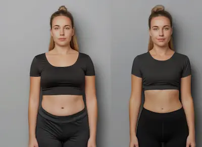

Historias inspiradoras: De obesidad a salud en 1 año
Perfil Clínico Inicial: Dos Caminos a la Obesidad
Juan, 42 años: Obesidad mórbida (IMC 38), prediabetes (HbA1c 6.2%), hígado graso grado II. Antecedentes familiares de diabetes tipo 2. Sedentario extremo (< 2,000 pasos/día). Patrón alimentario: atraves nocturnos, consumo excesivo de ultraprocesados (3.5L soda/semana).
María, 35 años: Obesidad grado II (IMC 34), síndrome de ovario poliquístico, resistencia a la insulina. Historia de dietas yo-yo (5 intentos fallidos). Actividad física irregular (1-2 veces/mes). Consumo emocional de carbohidratos.
Ambos casos representaban desafíos distintos pero compartían marcadores de inflamación crónica elevados (PCR >3 mg/L) y circunferencia de cintura peligrosa (Juan: 112cm; María: 98cm). Sus evaluaciones iniciales incluyeron DEXA (composición corporal), prueba de tolerancia a la glucosa y perfil lipídico completo, estableciendo líneas base objetivas.
Intervenciones Personalizadas: Más Allá de "Comer Menos, Moverse Más"
Protocolo de Juan:
- Nutrición: Dieta mediterránea modificada (40% grasas saludables, 30% proteínas). Eliminación gradual de azúcares añadidos (reducción del 10% semanal). Suplementación con omega-3 (2g/día) y vitamina D (5,000 UI/día).
- Ejercicio: Comenzó con caminatas progresivas (3,000 a 10,000 pasos/día en 3 meses). Entrenamiento de fuerza 2x/semana (máquinas guiadas inicialmente).
- Soporte psicológico: Terapia cognitivo-conductual para manejo de ansiedad y establecimiento de rutinas.
Protocolo de María:
- Nutrición: Enfoque low-glycemic load (carga glucémica < 80/día). Comidas cada 3-4 horas para estabilizar glucosa. Suplementos: inositol (4g/día) para sensibilidad a la insulina.
- Ejercicio: Yoga terapéutico 3x/semana + entrenamiento interválico de bajo impacto (bicicleta elíptica).
- Manejo hormonal: Control ginecológico + seguimiento de marcadores de SOP.
Ambos protocolos incluyeron monitorización continua de glucosa (FreeStyle Libre) durante los primeros 3 meses para identificar respuestas individuales a alimentos.
Resultados Cuantificables a los 12 Meses
Juan:
- Pérdida de 34kg (22% de peso corporal)
- Reducción de cintura: 112cm → 89cm
- HbA1c: 6.2% → 5.4%
- Grasa visceral (por DEXA): 3.5kg → 1.2kg
- Mejoría en hígado graso (de grado II a normal)
María:
- Pérdida de 28kg (18% de peso corporal)
- Reducción de cintura: 98cm → 76cm
- Regularización menstrual (ciclos de 32 días vs. 90+ días antes)
- Resistencia a la insulina (HOMA-IR): 3.8 → 1.4
- Aumento masa muscular: +3.5kg
Ambos lograron mantener los resultados a 24 meses de seguimiento, demostrando la sostenibilidad del enfoque.
Lecciones Clave y Errores que Evitaron
Factores Comunes de Éxito:
- Enfoque no restrictivo: Ninguno contó calorías estrictamente; priorizaron calidad nutricional.
- Progresión gradual: Cambios implementados en fases (no todo a la vez).
- Soporte multidisciplinario: Nutricionista, entrenador y psicólogo trabajando en equipo.
- Monitorización objetiva: Uso de tecnología (wearables, DEXA) para feedback preciso.
Errores Previos que Evitaron:
- Dietas relámpago (< 1,200 kcal) que habían dañado su metabolismo
- Ejercicio excesivo inicial que llevaba al abandono
- Mentalidad de "todo o nada" ante deslices
- Comparación con cuerpos/resultados irreales en redes sociales
Sus transformaciones fueron documentadas con fotos mensuales estandarizadas (misma luz, ángulo y ropa), medidas antropométricas semanales y análisis sanguíneos trimestrales, proporcionando evidencia tangible de que la obesidad puede revertirse con intervenciones personalizadas y científicamente fundamentadas.